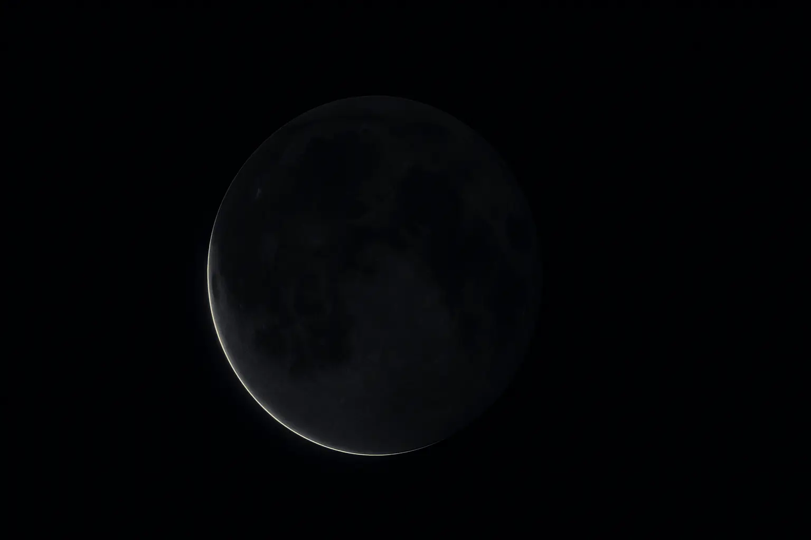
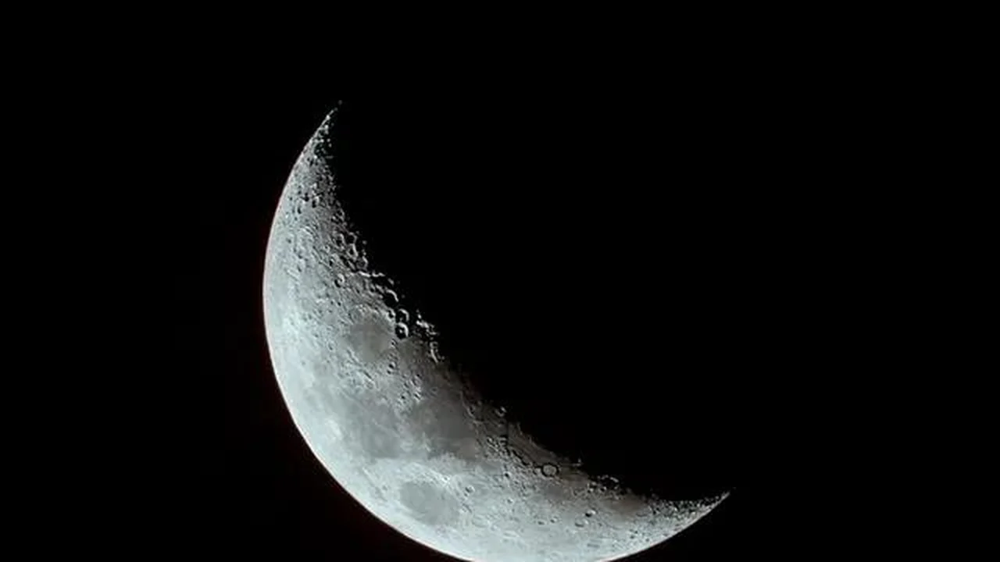
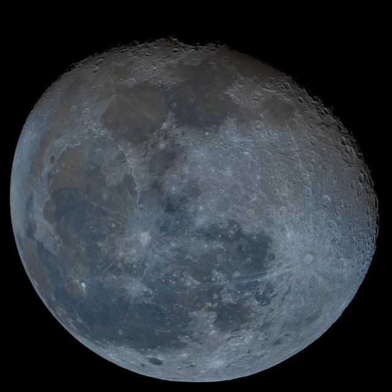
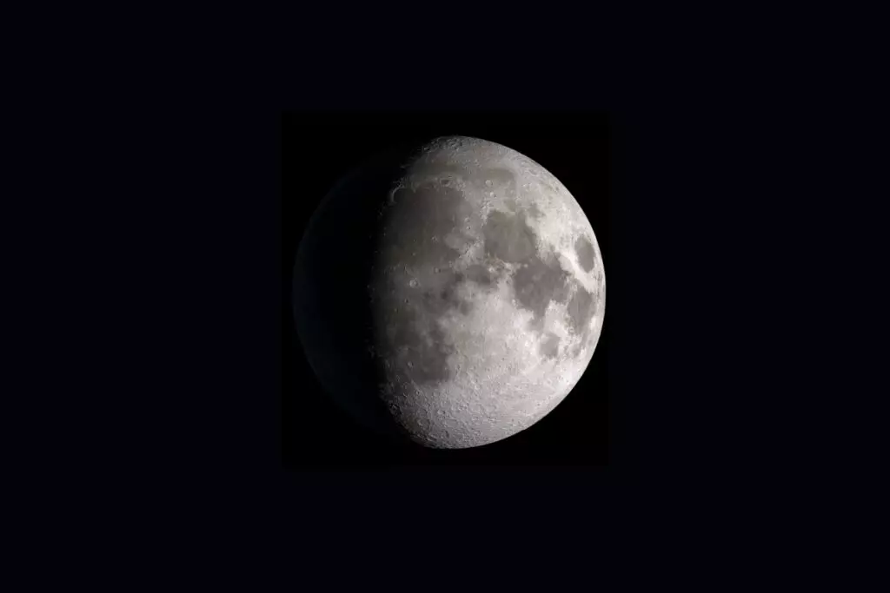
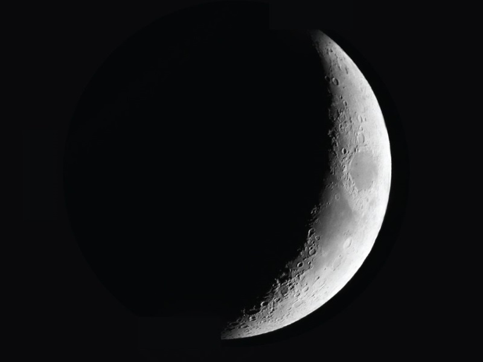
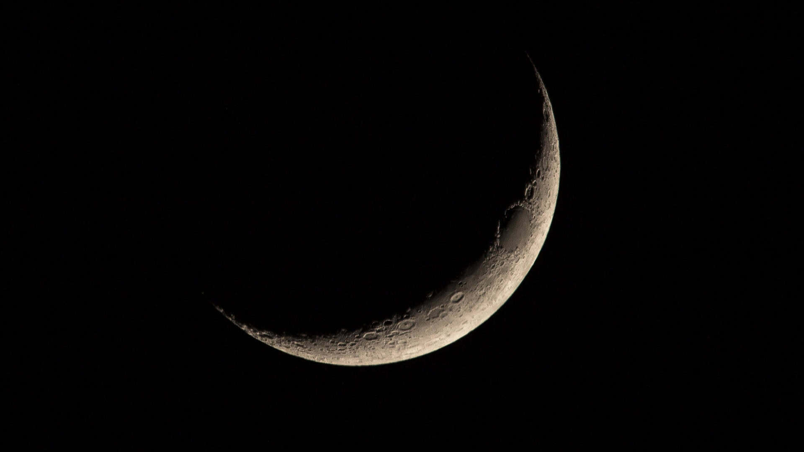

O que são as fases da lua ?
As fases da Lua são as diferentes aparências que a lua assume ao longo de um mês.
Elas ocorrem porque aLua não tem luz própria, refletindo a luz solar.
-
Lua Nova
É a fase em que a Lua fica entre a Terra e o Sol,

deixando sua face iluminada voltada para o espaço.
-
Lua Crescente
ocorre quando o satélite começa a se afastar do Sol, exibindo uma fina faixa iluminada

-
Quarto Crescente
ocorre quando a metade do disco lunar fica visível no céu

-
Lua Gibosa Crescente
é a fase intermediária entre o Quarto Crescente e a Lua Cheia. Mais da metade do disco lunar fica iluminada

-
Lua Cheia
A Terra fica entre o Sol e a Lua. Toda a face visível do satélite recebe luz solar,

formando um círculo brilhante. -
Lua Gibosa Minguante
é a fase intermediária entre a Lua Cheia e o Quarto Minguante. Mais de 50% do disco lunar está iluminado,

mas a área visível diminui gradualmente. -
Quarto Minguante
ocorre quando a Lua completa três quartos de sua órbita

Vista da Terra, aparece como uma meia-lua, com a metade iluminada voltada para o lado oposto do Quarto Crescente -
Lua Minguante
Lua Minguante é a última fase do ciclo lunar, ocorrendo no período em que a face iluminada

do satélite visível da Terra diminui progressivamente